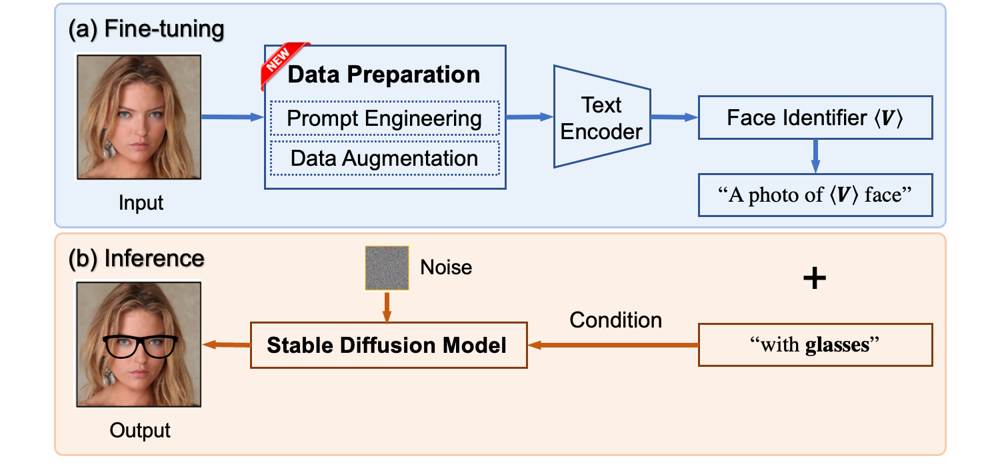
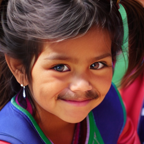
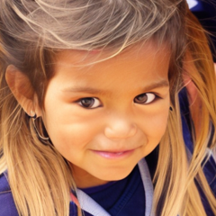

Abstract:
Facial image manipulation is the task of modifying a person's facial attributes like expressions, accessories, etc. while maintaining the identity and other irrelevant features.
A text prompt will be provided as the guidance on how the image should be modified.
In this project, we explore the use of Stable Diffusion model for facial editing.
🧾 Proposed Framework
Given an input image I and editing text instruction t, our aim is to produce a new image I'. While I' should be edited according to the text t, other factors of image I should be the same.
Figure below shows the framework of the model, which contains two major parts: First, fine-tune the pre-trained stable diffusion model, that is, given one image, we need to implant the new "word" that represents the face into the diffusion model's dictionary. Second, infer the output image conditioned on the face identifier and textual prompt.

📠Evaluation
Our process involves computing embeddings for an image and text using a pre-trained CLIP model. Since CLIP embeddings have the property of being identical for both text and image, we can use cosine similarity on that embedding space to determine how aligned the text is with the image. For instance, if we have a photo of a woman and the text description "A photo of a smiling woman", the cosine similarity will indicate the likelihood of the woman smiling. The cosine similarity score ranges from -1 to 1, with 1 indicating a high likelihood and -1 suggesting no relation.
🖼 Qualitative Results
Qualitative results demonstrate that our method can generate images that are consistent with the given text prompt.
Especially in Angry 😠, Blue Glasses 👓, Red Glasses 👓, and Blone Hair 🟨 cases.
Note: All test images have size 512x512, but in here we have manually downscaled them to 300x300 for quicker web rendering. For higher resolution images, please refer to this 🚀 Google Drive for baseline, or this 🚀 Google Drive for ours.
Input Image
Prompt
Angry ğŸ˜
Mustache 🥸
Blue Glasses 👓
Red Glasses 👓
Red Lipstick 💋
Blone Hair 🟨
Baseline
Ours â


📊 Quantitative Results
We randomly sample 20 images from CelebA-HQ dataset and apply our methods to compare with baseline.
Our process involves computing embeddings for an image and text using a pre-trained CLIP model.
We compute the mean CLIP cosine similarity between edited images and editing prompts.
In short, there are 20 images (20 identities) paired with 11 editing directions (220 edited images). We surpass baseline on 7/11 editing attributes: 63.64%.
📠Interesting Findings
During the project, we have faced major challengings and issues, in which end up with made several modifications. Here, we discuss some interesting results, both working cases and non working cases. Some results might have very strong intutive idea behind, but it turned out that it did not work in practices.
❓ Recovering input from noise
Upon conducting a thorough investigation, we have discovered that the DDIM inversion method is unable to function with an additional text prompt as input. When applying the image inversion process with an extra input caption, as shown in Figure A, the resulting reconstructed image differs greatly from the input.
Figure A: It is non-trivial to recover exactly one image from noise together with descriptions for that images. This is ill-posed problem as one description might fit to many images.
❓ More description is better?
In an effort to improve the model's ability to reproduce images accurately, the decision was made to provide more textual description as input. However, the results were not as expected, and it was discovered that adding more descriptive text could actually harm the model's performance. This was attributed to the fact that a single description could be ambiguous and apply to many different images.
To illustrate this point, a Figure B was created showing how adding the description "A baby in a blue blanket" could lead the model to generate an image of a different baby than the one intended. This highlights the trade-off between accuracy and robustness, where the more the model is forced to adhere to the text prompt, the more likely it is to overlook important details in the input image.
📖 Related Works
Facial Editing Over the past few years, Generative Adversarial Models (GANs), particularly StyleGAN, have been widely studied and used for facial image editing. However, the use of GAN models is limited to the learned latent space, which poses challenges in identifying manipulation directions within that space. In addition, GANs require an image inversion process that may accumulate errors in the editing process.
While GANs naturally do not support textual input, most existing works lie on exploiting CLIP to enable GANs to take text prompts as guidance.
On the other hand, as trained on billions text-image pairs, diffusion models inherently understand the text-image relationship. Diffusion models have become a better alternative to GANs due to their image quality and interpretability.
Diffusion Models Among diffusion models, Stable Diffusion is the most popular and can generate high-quality images, but its use in editing images remains an active question.
The state-of-the-art model, InstructPix2Pix, introduced a new synthetic dataset of before-after images to fine-tune Stable Diffusion Model.
It has been proven that fine-tuning a model may have a negative impact on its robustness.
InstructPix2Pix performs well under common basic settings (for example, "add glasses"), but struggles with out-of-domain editing, such as "blue hair".
Although Original Stable Diffusion can comprehend the "blue hair" attribute, InstructPix2Pix cannot replicate this extreme editing, as it may not appear frequently enough in the training sets.
Textual InversionDreamBooth a module that perform the textual inversion given a collection of the images as reference to a concept. The module can bind a unique identifier with a given input by fine-tuning the stable diffusion model, personalizing the general model in a few shot scenario. A new concept is introduce to the model by leveraging the prior shared knowledge from the class descriptor and then extracting the personalized knowledge by contrasting the images from other images from the same class. As a result, the identifier can well reconstruct the face given representative input.
Image Captioning Natural Language Generation (NLG) techniques will be applied to generate the linguistic contents of the input face image. Given the dataset of face-description pairs, we are able to fine-tune a pre-trained image captioning model specifically for the face class. The pre-trained Vision Encoder Decoder Models, in which the encoder is used to encode the image, after which an autoregressive language model generates the caption.
📦 Miscellaneous
Code: All experiments are conducted on Google Colab. We're happy to make all codes/ implementation available at: